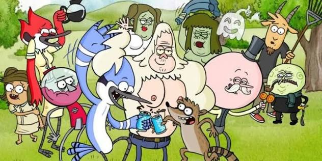
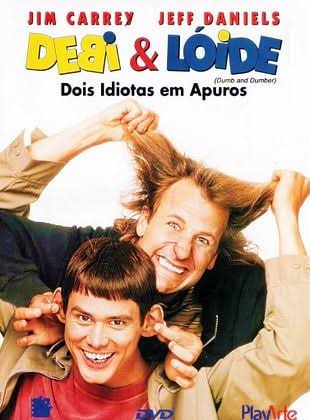
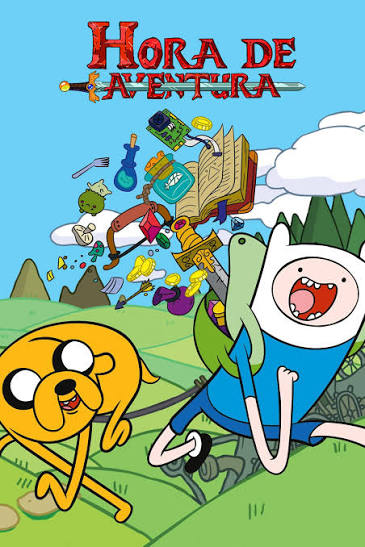

Olá, Mundo!
Meu primeiro parágrafo em HTML
Meu segundo parágrafo em HTML
 Clique aqui!
Clique aqui!
-

Apenas um Show (Regular Show) acompanha Mordecai, um gaio-azul, e Rigby, um guaxinim, que trabalham como zeladores em um parque e tentam fugir do tédio de suas tarefas diárias
-

O filme Debi & Lóide: Dois Idiotas em Apuros (1994) acompanha dois amigos muito atrapalhados que atravessam os Estados Unidos para devolver uma maleta cheia de dinheiro sem saber que se trata do resgate de um sequestro
-

Hora de Aventura acompanha as missões de Finn, um garoto humano, e Jake, um cão mágico com o poder de mudar de forma e tamanho
-

Em Velozes & Furiosos 10, Dom Toretto (Vin Diesel) e sua família enfrentam Dante (Jason Momoa), o filho letal do traficante Hernan Reyes. Buscando vingança pela morte do pai ocorrida no quinto filme, Dante surge do passado para destruir tudo e todos que Toretto mais ama
-

Vingadores: Ultimato mostra os heróis sobreviventes cinco anos após o estalar de dedos de Thanos. Eles criam um plano de viagem no tempo para recuperar as Joias do Infinito do passado, trazem todos de volta, derrotam Thanos em uma batalha épica ao custo da vida do Homem de Ferro, e encerram a saga